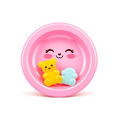

CandyStarter
Starter skeleton for SugarCraft apps

CandyStarter is the template you start from when you want a new SugarCraft terminal app. composer create-project sugarcraft/candy-starter my-app --stability=dev gives you a working app with a demo Counter Model, PHPUnit wired up, and a bin/start entry point. It mirrors the shape of charmbracelet/bubbletea-app-template (Go), so a Bubble Tea developer will recognise the Model, the update loop and the view. It is a project skeleton, not a library: you copy it, replace the Model, and keep the runtime from sugar-core.
Install
composer create-project sugarcraft/candy-starter my-app --stability=devPackagist carries dev-master today, so the command passes --stability=dev. Without it, create-project refuses a dev-only package. The equivalent shape is composer create-project sugarcraft/candy-starter:dev-master my-app. No candy-starter/v* release tag exists yet, so the flag stays required until the first tag is cut and synced.
The package is type: project. Use create-project and nothing else. The require verb is the wrong tool here: Composer does not refuse a require of a project-type package, but the skeleton would land in vendor/ and merge its App\ autoload map into your host application.
PHP 8.3 or newer is required, with ext-intl and ext-mbstring (both hard-required by sugar-core) and ext-ffi (required by sugar-pty, which arrives through sugar-core). The skeleton declares no extensions of its own, so Composer fails with a platform error if one is missing.
Quickstart
composer create-project sugarcraft/candy-starter my-app --stability=dev
cd my-app
./bin/startThe app opens in your terminal and shows the counter. Press ↑ to raise it, ↓ to lower it, and q, Esc or Ctrl+C to quit. The frame it draws for a count of 3 is this, captured from (new Counter(3))->view():
╭─────────────────────────────────────────╮
│ │
│ count: 3 │
│ ↑ ↓ to change · q / Esc / Ctrl+C quit │
│ │
╰─────────────────────────────────────────╯Every line of that frame comes from the Model. The rounded border and padding come from one shared Style, and the two text lines come from lang/en.php. The Program harness draws the frame, owns the terminal and runs the loop.
What ships in the skeleton
my-app/
├── composer.json # type: project, requires sugar-core and sugar-style
├── phpunit.xml # failOnWarning gate; tests scan tests/, coverage spans src/
├── LICENSE # MIT
├── README.md # the walkthrough this page mirrors
├── CALIBER_LEARNINGS.md # template gotchas for AI-agent config sync (fine to delete)
├── .gitignore # vendor/, composer.lock, phpunit caches, *.gif except !.vhs/start.gif
├── .assets/icon.png # icon for the docs site
├── bin/start # entry point: Program(new Counter()), run(), stopSignal() exit tail
├── lang/en.php # the two UI strings; the other locales mirror these keys
├── src/
│ ├── Counter.php # demo Model: up, down, quit, styled border
│ └── Lang.php # the copyable Lang facade over sugar-core's translator
├── examples/
│ └── headless.php # drives Counter::update() from a fixed key list, no terminal
├── tests/
│ ├── BinStartExecutionTest.php # runs bin/start: autoload refusal, q and SIGINT exits
│ ├── BinStartExitTailTest.php # pins the bin's stopSignal() exit tail (128+N)
│ ├── CounterTest.php # pinned behaviour matrix, the test-shape reference
│ ├── LangTest.php # the Lang facade resolves and interpolates strings
│ ├── LocaleParityTest.php # every locale carries the en key set
│ ├── ModelContractDocumentationTest.php # README fence against the interface
│ ├── ReadmeSnippetsTest.php # lint and execute every README php fence
│ └── SiteBodyTruthTest.php # this docs page keeps the README's claims
└── .vhs/
├── start.tape # CI recording of the running app
└── start.gif # the rendered demo; CI regenerates itbin/start is a handful of meaningful lines. It loads the autoloader, selects the UI locale, builds the Model, wraps it in Program and calls run(). The exit tail then checks stopSignal(). A signal-stopped run exits 128+N, so 130 after SIGINT and 143 after a plain kill. A cooperative quit keeps exit code 0.
Concepts
A SugarCraft app is a Model. A Model is an immutable value object with four required methods, init / update / view / subscriptions, and the Program harness calls them in a loop. The shape is the Elm-style Model, Update and View architecture. State lives on the value object, transitions are pure functions, and side effects such as timers, HTTP calls and file I/O are scheduled as Cmd values rather than run inline.
use SugarCraft\Core\Model;
use SugarCraft\Core\Msg;
use SugarCraft\Core\Subscriptions;
final class Greeter implements Model
{
public function init(): ?\Closure { return null; } // optional startup Cmd
public function update(Msg $msg): array { return [$this, null]; } // [next Model, optional Cmd]
public function view(): string { return 'hello'; } // the current frame
public function subscriptions(): ?Subscriptions { return null; } // live Msg sources
}Omit any one of the four methods and PHP refuses to instantiate the class with a contains 1 abstract method fatal. Only the return of init() is optional. The method itself is required, and null means "no startup Cmd". The same holds for subscriptions(), which returns null when the Model needs no live sources.
update() returns a fresh Model whenever state changes and the current instance when it does not. It never mutates $this. That is why Counter declares public readonly int $n, and why its "no change" arm can return $this honestly.
The contract allows view() to return a plain string or a View value object. The starter narrows the return type to string, which is enough for the demo. A View carries a cursor position and shape, a window title, taskbar progress, terminal colours, a mouse-tracking mode, focus reporting, bracketed paste and a pixel image layer. If you need any of those, widen the return type back to string|View.
Getting messages in
update() sees only what the harness dispatches. There are four doors in. The terminal is the first: keystrokes, mouse events, resizes and pastes arrive as Msg objects with no work from you. The other three are yours to wire.
subscriptions()is the live-source seam. Return aSubscriptionscollection, for example(new Subscriptions())->withTick('clock', 1.0, $produce), and the harness starts each entry. It re-diffs the set after every update cycle, starting new entries and cancelling dropped ones.Cmd::promise()runs work off the loop. A promise that resolves with aMsgdispatches that Msg intoupdate(). A rejection arrives as anExceptionMsg.Program::send()pushes a Msg onto the running loop from outside. A call made beforerun()is buffered and drained when the loop starts.
The demo takes none of these doors. Before any of them opens, the harness dispatches boot messages (EnvMsg, ColorProfileMsg and an initial WindowSizeMsg). Every Model must tolerate them, and the demo's update() treats every non-key Msg as a no-op.
Files you replace
The skeleton has three things a real app replaces: the Model in src/, the import in bin/start, and the tests that pin the Model's behaviour. The Forking checklist below lists the exact edits.
Tasks and how-to
Replace the demo Model
Write your own Model with the four methods, then point bin/start at it. The starter names the demo Model in two places in bin/start, the use App\Counter; import and the new Program(new Counter()) call, so change both lines:
// bin/start
use App\Counter; // before
use App\Dashboard; // after: your own final class implementing Model
$program = new Program(new Dashboard());
$program->run();Add a translated string
Frame text goes through Lang::t(). Add a key to lang/en.php and mirror it in every other locale file. The LocaleParityTest fails when the key sets drift apart. Call T::setLocale(T::detect()) at boot, as bin/start already does, so the locale follows LC_ALL, then LC_MESSAGES, then LANG.
// lang/en.php
return [
'frame.count' => 'count: {n}',
'frame.hint' => '↑ ↓ to change · q / Esc / Ctrl+C quit',
// add a key such as 'frame.title' => 'counter' here, then mirror it
// in lang/de.php, lang/fr.php and every other locale file
];Turn on the panic handler
The starter ships an opt-in panic handler that catches uncaught exceptions and draws a styled backtrace. Require sugarcraft/sugar-log, then uncomment the two lines at the top of bin/start:
composer require sugarcraft/sugar-loguse SugarCraft\Log\Log;
Log::installPanicHandler();The backtrace prints absolute paths and the arguments of every frame. That is what you want while debugging. On a shared or recorded terminal it can leak data, so ship with the uncaught errors routed to a log file or syslog, and keep on-screen backtraces for debug builds.
Pipe the program or run it under cron
Raw mode needs an interactive input stream. Run the app with piped stdin, as in php bin/start < /dev/null from cron or CI, and it does not enter raw mode. It quits cleanly at end of input with exit code 0. Build the options explicitly when you need a different behaviour, for example to keep the program running at end of input:
use SugarCraft\Core\ProgramOptions;
$options = ProgramOptions::builder()
->withExitOnStdinEof(false) // keep running when stdin reaches end of input
->build();
$program = new Program(new Counter(), $options);openTty: true grabs /dev/tty for input on piped streams. It also moves the output to the terminal, so frames stop reaching your pipe.
API reference
| Class | Method | Description |
|---|---|---|
| Counter | __construct(n = 0) | Creates the demo Model. Its single state is the readonly count $n. |
| Counter | init() | Optional startup Cmd (null means none). Required method. |
| Counter | update(msg) | Handles one message and returns [next Model, optional Cmd]. |
| Counter | view() | Renders the current frame as a styled string. |
| Counter | subscriptions() | Live Msg sources (null means none). Required method. |
| Lang | t(key, params) | Looks up a UI string in lang/<code>.php, falling back to English. Built on the sugar-core T translator. |
| Program (sugar-core) | run() | Starts the app. Provided by the sugar-core dependency, not shipped by the starter. |
| Program (sugar-core) | send(msg) | Injects a Msg into a running loop. This is out-of-band ingress, besides the Cmd::promise() and subscriptions() paths that reach update(). |
| Program (sugar-core) | stopSignal() | Returns the OS signal number that stopped the run, or null for a cooperative quit. bin/start turns it into the 128+N exit code. |
Configuration
The starter reads no environment variables of its own, and its files carry no configuration file. Configuration lives in code, as ProgramOptions arguments passed to Program. The demo runs on the defaults, which are listed below. The rest of the options exist in sugar-core and are set the same way.
| Option | Type | Default | Effect |
|---|---|---|---|
useAltScreen | bool | false | Takes over the alternate screen. Off, so the frame draws on the main screen. |
hideCursor | bool | true | Hides the terminal cursor while the app runs. |
framerate | float | 60.0 | Maximum render rate in frames per second. |
mouseMode | MouseMode | MouseMode::Off | Enables mouse tracking only when you pass it. |
bracketedPaste | bool | false | Asks the terminal to bracket pasted text. |
inlineMode | bool | false | Renders only the program's own rows instead of taking over the viewport. Pairs with useAltScreen: false. |
openTty | bool | false | Reads input from /dev/tty and moves output there. |
exitOnStdinEof | bool | true | Quits at end of piped stdin. Set through ProgramOptions::builder(). |
Keys
The demo binds five keys. Every other key is ignored.
| Key | Action |
|---|---|
↑ (KeyType::Up) | Increments the count. |
↓ (KeyType::Down) | Decrements the count. |
| q | Quits. Matches the rune q with no Ctrl modifier, so Alt+q also quits. |
| Esc | Quits under any modifier. |
| Ctrl+C | Quits. A raw-mode tty delivers it as a KeyMsg, so the quit is cooperative and exits 0. |
The quit matrix is pinned cell by cell in tests/CounterTest.php. Its comments explain each rule, including why Ctrl+Q does not quit while Alt+q does.
Theming and styling
The frame is one Style from sugar-style. It draws a rounded border and one unit of padding on each side. The style is built once and reused, because a Style is an immutable value and constructing it per frame only creates throwaways at render rate.
use SugarCraft\Style\Border;
use SugarCraft\Style\Style;
private static ?Style $frameStyle = null;
private static function frameStyle(): Style
{
return self::$frameStyle ??= Style::new()
->border(Border::rounded())
->padding(1, 2);
}The demo emits no palette, so it renders cleanly in monochrome. Add colour with the same Style builder, or build a palette from Theme in sugar-style, and keep the constant decoration memoized as shown above. Per-frame content styling can stay inline.
Examples
Run the app with ./bin/start. To drive the Model without a terminal, run php examples/headless.php. It feeds a fixed key list into Counter::update() and prints one line per key, then the final frame, so you can check the transitions from a script or in CI. The copyable references are the files that show the pattern end to end:
examples/headless.php: the headless driver. It prints one line per key, with the count and whether the step asked for a quit, then the final frame.bin/start: the entry point, the locale selection and the exit-code tail.src/Counter.php: a complete Model with the four methods, a readonly state, a quit matrix and a memoized style.tests/CounterTest.php: the behaviour matrix. It drivesupdate()with constructed messages and asserts the returned tuple.
The demo recording at the foot of this page is the .vhs/start.tape rendered by CI. It is the only recording the starter ships.
Testing
Inside a create-project app the dependencies are already installed. Run the suite with:
vendor/bin/phpunit
# or, from a plain clone
composer install
vendor/bin/phpunitThe starter's tests need no event loop, no terminal and no mocking. They construct Msg objects, call update() and assert the result. The test suite also carries three documentation guards: ReadmeSnippetsTest lints and runs every PHP fence in the README, ModelContractDocumentationTest keeps the README's Model fence in step with the interface, and SiteBodyTruthTest keeps this page in step with the README. When you fork the template, adapt or delete those three guards, because they pin this tutorial and go red as soon as your app diverges from it.
Troubleshooting and FAQ
create-projectstops with a stability error. The package is dev-only. Add--stability=dev, or usesugarcraft/candy-starter:dev-masteras the package name.- PHP refuses the Model with
contains 1 abstract method. A Model must implement all four methods, includingsubscriptions(). Returnnullfrominit()orsubscriptions()when you have nothing to start or subscribe to. bin/start: cannot find composer autoload.php. Runcomposer installin the package directory. The entry point resolves the autoloader relative to its own file, so it runs from any working directory oncevendor/exists.- The app exits at once when run from cron or CI. Piped stdin reaches end of input, and the program quits with exit code 0. Build the options with
ProgramOptions::builder()->withExitOnStdinEof(false)->build()to keep it running. - The exit code is 128+N after a stop. The stop was delivered by the OS, for example
kill -INT(130) orkill(143). A cooperative quit through q, Esc or Ctrl+C keeps exit code 0. - The output shows raw control sequences under
TERM=dumb. The harness emits DEC private-mode escapes unconditionally and does not probe terminal capabilities. Run the demo in a real terminal.
Architecture
The architecture has three layers. The Program harness in sugar-core owns the event loop, the render tick, signal installation, raw-mode setup and the alternate-screen lifecycle. The Model owns the state and decides what each message does. The Lang facade and the style builder are plain helpers the Model calls from view().
Trust boundary
Program writes whatever view() returns to the terminal unmediated. Render only text you control. Text from files, network responses or other users goes through a sugar-core sanitizer first. Use Sanitize::untrusted() to strip terminal-control payload, Sanitize::untrustedForDisplay() for multi-line text where carriage-return overwrite and bidi spoofing matter, and Sanitize::untrustedForMarkedFrames() when a frame carries mouse-zone or image markers. Raw SGR and OSC-8 payload is an injection surface under all three.
Common next steps
The starter stops at one static frame. These sugar packages cover the next steps. Add the dependency, import the classes and return them from view().
| You want to | Reach for |
|---|---|
| Add a text input or a multi-page wizard | sugar-forms (TextInput, Group) |
| Render Markdown help text | sugar-markdown |
| Plot a sparkline or a chart | sugar-charts |
| Style the frame with colour and emphasis | sugar-style (Style, Theme) |
| Serve the app over SSH | sugar-ssh-server |
Check each package's README for setup and side effects. sugar-ssh-server runs an authenticated server around your Program, and the Lang facade registers its locale directory on first use.
Forking checklist
These six edits are what you do after create-project:
composer.json: renamenameanddescriptionto your app.bin/start: swap theuse App\Counter;import, and thenew Counter()in thenew Program(...)call, for your own Model.src/andtests/: replace the demo Model and its matrix. Keep theApp\andApp\Tests\namespaces, or update the PSR-4 prefixes to match. Adapt or delete the three documentation guards.composer.lock: the shipped.gitignoreignores the lock, which suits this template but not the app you fork it into. Delete the ignore line and commit the lock for reproducible builds.- Sibling dependencies:
sugarcraft/sugar-coreandsugarcraft/sugar-styleridedev-master. Switch to released constraints once tags exist. - Tests: run
vendor/bin/phpunit(orcomposer test) after each change.
Versioning and changelog
There is no release yet. Packagist serves dev-master and the committed composer.lock is the only reproducibility lever. Release tags follow the candy-starter/v* pattern once the first one is cut. The sibling SugarCraft packages are dev-only until their own first tags, so the starter tracks them on dev-master on purpose.
Upstream mapping
The starter mirrors the template structure of charmbracelet/bubbletea-app-template. The PHP names differ where the idiom differs.
| Upstream (Go, bubbletea-app-template) | SugarCraft (PHP) |
|---|---|
Model.init | Counter::init(), returns an optional \Closure Cmd |
Program.update | Counter::update(Msg), returns [Model, ?Cmd] |
Model.view | Counter::view(), returns a styled string |
| (no direct counterpart) | Counter::subscriptions(), the live-source seam |
| Bubble Tea program runner | SugarCraft\Core\Program, from sugar-core |
Related reading: sugar-core for the runtime and the Model contract, and sugar-style for the frame styling.
Demos.
A VHS-recorded GIF of the demo app as it runs from the skeleton. Regenerated automatically on every push that touches the source.